| |
|
TÜNEL İMALAT TAKİBİ
|
Veri Tipleri
Parametreler Girdi Seçenekler Dosyalar, Süreç ve Açısal Referans Analiz Sırasında Parametrelerin Değiştirilmesi Ölçülen ve Analiz Edilen Elemanların Açıklaması Proje
Lazerden Gelen Veriler .lbs Oluşturma Seçenekleri .pmt Oluşturma Seçenekleri .pmt Elde Etmek İçin Filtreleme Dosyalar ve Süreç Genel Bilgiler 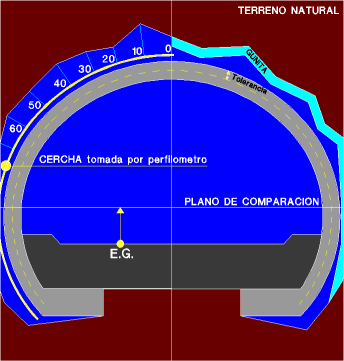 Bu modül, projenin teorik verilerini tünelin inşaat çalışmaları sırasında elde edilen verilerle karşılaştırmaya olanak tanır. Veri kaynağı, analiz türü ve elde edilmek istenen sonuçlar açısından çok sayıda durumla başa çıkabilecek şekilde tasarlanmıştır. Bu nedenle, gerçekleştirilen süreçlerin genel bir görünümünü elde edebilmek için bu belgenin tamamının okunması şiddetle tavsiye edilir.
Dosyalar Bu sekmeden, PROFİLOMETRE, ÜST YARI+ALT YARI KAZISI, LAZER VERİLERİ ve RAPORLAR sekmelerinde kullanılan parametrelerin ve dosya adlarının yapılandırmasını kaydetmek ve yüklemek mümkündür. 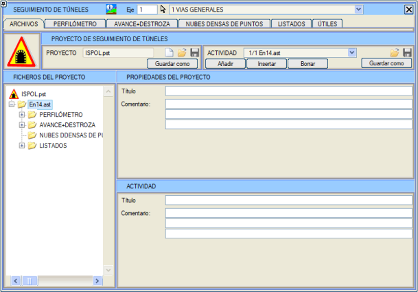
Tüm bu veriler .ast uzantılı bir dosyada saklanır ve bir aktiviteyi temsil eder. Varsayılan olarak, ISTRAM®/ISPOL® sistem tarihini okur ve yeni bir aktiviteye, ilk iki karakteri mevcut ayı ve son iki karakteri mevcut yılı belirten dört karakterli bir ad atar (örneğin, Oc14.ast Ocak 2014'ü belirtir). Eğer böyle bir ad zaten mevcutsa, adın sonuna a karakteri eklenir, eğer bu da mevcutsa, b karakteri eklenir ve bu şekilde devam eder. Bu ad, geometri, metraj ve lazer raporu listeleri için temel ad olarak kullanılır (örneğin, Oc14.res). Birden fazla aktivite ekleyebilir ve açılır menü düğmesiyle istediğimizi seçebiliriz. Tüm aktivitelerin bütünü, bir tünel imalat takibi projesini oluşturur. Uzantısı .pst olan proje dosyaları, projeyi oluşturan farklı aktivitelere olan referansları saklar. .ast aktivite dosyalarında, boşluk içeren tam yolların (Full Path) kaydedilmesine izin verilir. Bir aktivite yüklenirken, dosya o yolda bulunamazsa, çalışma klasöründe aranır. Bu klasörde de bulunamazsa, adının yanında bir uyarı simgesi gösterilir. Ağaç yapısında bir aktiviteden diğerine geçerken, program geçiş yapmadan önce mevcut aktiviteyi kaydeder. [Yeni] tuşu, tüm verileri varsayılan değerlere sıfırlamaya olanak tanır. Bu modüle ilk kez girildiğinde, program ISPOL.pst projesini oluşturur. Sonraki seferlerde ISTRAM®/ISPOL® eğer mevcutsa bu projeyi yüklemeye çalışır. Hem aktivitelere hem de projelere bir başlık ve üç satırlık açıklama kaydedilebilir. Profilometre PROFİLOMETRE sekmesi aşağıdaki yüzer menüyü gösterir: 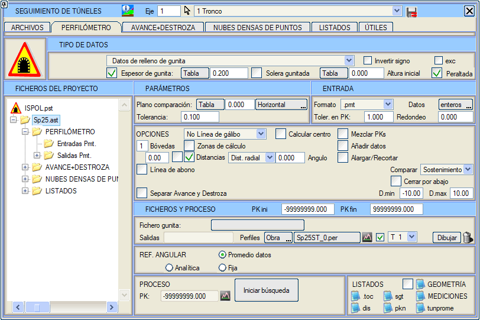
Veri Tipleri 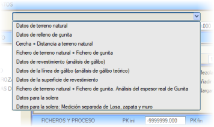Aşağıdaki veri toplama yöntemleri öngörülmüştür:
Özel durum olarak, tünelde tlh1 ve tlh2 kutucukları aracılığıyla bir topuk tanımlandığı püskürtme beton dolgu verisi durumu.
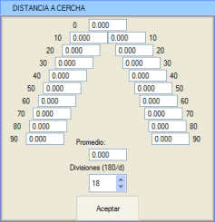İksadan alınan mesafeler, farklı profillerde ilerledikçe girilecektir. Belirli bir KM için mesafeler girildikten sonra, [Kabul] seçeneği, iksaları temsil eden L165 yüzeyini ve iksadan türetilen doğal zemin yüzeyini oluşturacaktır.
İksa bölüntü sayısı, 2 (180/2 = bölüm başına 90 dereceye eşdeğer) ile 30 (180/30 = bölüm başına 6 dereceye eşdeğer) arasında seçilebilir. Varsayılan değer, bölüm başına 10 dereceye eşdeğer olan 18 bölüntüdür. Ayrıca, programın iksanın tüm bölüntülerine eşit olarak uyguladığı bir ortalama değer girilebilir. İksaya püskürtme beton atılmışsa, Püskürtme betonlu iksa seçeneği etkinleştirilmeli ve ortalama bir püskürtme beton kalınlığı değeri girilmelidir.
Her KM için, en yakın doğal zemin kazı dosyasının profilini arar; bu profilin PARAMETRELER bölümünde belirlenen Maks.KM Farkı'ndan (maksimum KM farkı) daha küçük bir mesafede olması gerekir, aksi takdirde profil analiz edilmez. Uygun profil bulunduğunda, bu profilin tamamı kırmızı kot eğimi uygulanarak düzeltilir, böylece profilleri karşılaştırırken daha yüksek doğruluk elde edilir.
Bu durumda, uygulama çıktı dosyası olan #*.pmt'ye veri yazar; bu dosya, püskürtme beton profillerinin KM'lerine yansıtılan teorik kazı verilerini içerir. KM toleranslarına göre noktaları elemek için yapılan geometrik analiz her iki dosyaya da uygulanır ve sonuçlar .res dosyalarında yalnızca püskürtme beton verileri için yayınlanır.
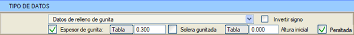
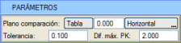Aşağıda, imalat takibi yapmak için kullanılan bazı önemli parametreler açıklanmaktadır:
Karşılaştırma düzleminin konumu, KM'ler içeren bir tablo aracılığıyla da verilebilir, bu da karşılaştırma düzleminin eksen boyunca değiştirilmesine olanak tanır. Bu tabloda her KM için, kırmızı kota (dönme ekseni) veya tünelin tavanına göre kot farkı ve yatay mı yoksa deverli mi olduğu belirtilir. Bu tabloyu .pkd dosyaları aracılığıyla yükleyebilir veya kaydedebiliriz.
Girdi 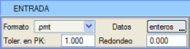Profilometreden gelen veriler, ASCII formatında .pmt veya .gsi uzantılı bir dosyada olacaktır. .pmt dosyaları, her satırın (X,Y,Z) koordinatlarında bir noktayı temsil ettiği bir formata sahiptir. İlk sütun, aynı enkesitte alınan noktaları gösteren sıra numarasına karşılık gelir, öyle ki yeni bir enkesit tekrar 1 numarasıyla başlar. Uygulama şunları dikkate alır:
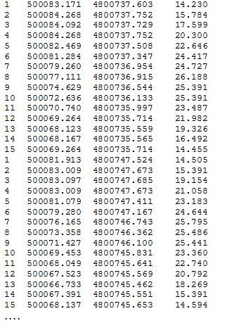
Program, her enkesitin tüm noktalarını eksene yansıtacak ve ortalama KM'yi hesaplayacaktır. Eğer herhangi bir nokta bu KM'den KM toleransı'ndan daha büyük bir mesafede ise, en uzak noktayı reddedecek ve ortalama KM'yi hesaplamak için kullanılan tüm noktalar KM toleransı içinde kalana kadar yeni bir ortalama hesaplamaya başlayacaktır. Aynı enkesit için noktaların sıralaması, tüm noktaların ortalama merkezle oluşturduğu açılara göre yapılır (zenitte 0 olacak şekilde -200 ile 200 grad arasında). Program ayrıca her enkesit için ortalaması alınmış KM'ye bir yuvarlama yapma seçeneği de sunar (0.000 değeri yuvarlama yapılmadığı anlamına gelir). Uygulama, yeniden sıralama ve düzeltme işlemlerinin sonucu olan yeni bir .pmt dosyası yazar. Bu dosyada, son sütundan sonra elde edilen ortalama KM yazılır ve ayrıca aynı enkesitin tüm nokta dizisi bulunur. Elde edilen dosya, başına # öneki eklenmiş aynı ada sahip olacaktır. Giriş formatı seçim düğmesinin yanında Veriler seçeneği bulunur. Bu seçenek, enkesitlerin nasıl elde edildiğini belirtir. Genellikle [bütün] seçeneği ile çalışılır (enkesitler tam olarak alınmıştır), çünkü [tekil] seçeneği (tekil noktalar alınmıştır) .pmt dosyasındaki her bir noktayı ayrı ayrı analiz eder ve yalnızca geometri raporunu çıktı olarak üretir (genellikle kontroller için kullanılır). [birleştir] seçeneği ise, .pmt dosyasını, 1, 2, 3, 4,... gibi sayısal bir sıraya (nokta numarasına göre) sahip olmayan bir nokta bulutu olarak varsayarak analiz eder. Bu işlem, KM farkı SEÇENEKLER bölümündeki KM toleransı'nın (GİRDİ bölümündeki DEĞİL) altında olduğu sürece tüm noktaları aynı KM'de birleştiren bir başlangıç süreci gerçekleştirir ve ardından ikiden az noktası olan enkesitleri reddeder. Bu son seçenek, veri toplama işlemi KM'ye göre değil, örneğin sol tarafın gidişi ve sağ tarafın dönüşü gibi bir güzergah boyunca yapıldığında uygulanmalıdır. .gsi dosyaları, .pmt dosyalarına benzer ASCII dosyalarıdır, ancak veri sıralamasının numaralandırılmış bir dizi izlememesi veya enkesit değişikliği anlamına gelen kodlar içermesiyle onlardan ayrılırlar. Bu durumda, aynı istasyonu değiştirmeden aynı sırada birkaç enkesit alınırsa, dosyadaki ardışık iki noktanın KM'leri arasındaki mesafe, KM toleransı için tanımlanan değerden daha büyük olduğunda bir enkesit değişikliği algılanır. Program, ikinci bir tür .gsi dosyasını da kabul eder. Bu dosya, öncekine benzerdir ancak enkesit için noktaların ortalama KM'sini almak yerine, enkesit için dosyada gelen KM'yi alır: *410001+0000000000ENKESİT 42....+0000000007075680 (bu durumda KM=7075.680'dir).
Not: .pmt profilometre dosyaları veya .txt, .xyz ve .lbs lazer veri dosyaları, çalışma klasörünün bir alt klasöründe bulunabilir. Seçenekler Aşağıdaki gibidir: 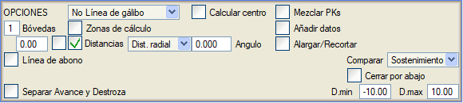
Gabari kontrolü için daha hassas bir şekilde kullanılabilecek başka bir seçenek de, bir aracın veya vagonun (demiryolları veya metro durumunda) tüm kritik noktalarını içeren 'sahte' bir imalat takip dosyası kullanmaktır. Bu seçenek VERİ TİPLERİ'nde belirtilmelidir:
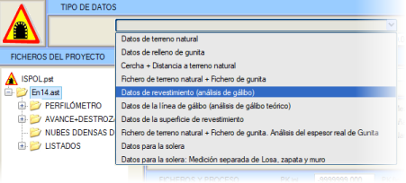
[ ] Mesafeler'in solundaki kutucuk işaretlenirse, mesafelerin ölçüldüğü referans çizgisi enkesitte çizilecektir.
Programın mesafe etiketlemesi için iki seçeneği vardır: birincisi, pozitif mesafeler için S319 (mavi) sembol tipini ve negatifler için S320 (kırmızı) sembol tipini kullanır. İkincisi, bu mesafenin değerinin yanı sıra işaretini de göstermek için altı sembol (S1074'ten S1077'ye kadar, S319 ve S320'ye ek olarak) kullanır. Hangi değerlerden itibaren hangi rengin kullanılacağı tanımlanabilir.
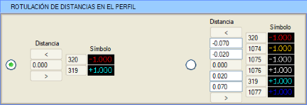
Metraj açısından ve kullanılan yöntemlere bağlı olarak, 'içeride' ve 'dışarıda' kavramlarına karşılık gelen alanlar ve hacimler elde edilecektir; bunlar tolere edilebilir ve edilemez ile aynı anlama GELMEZ; içeride ve dışarıda kavramları başlangıç yüzeyleri ile (toleranslar uygulanmadan) hesaplanır. Bu kutunun solunda, enkesit noktaları arasında mesafeleri işaretlemek için bir minimum ayırma değeri (gerçek metre cinsinden) tanımlamak mümkündür. Bu, .pmt'den gelen veriler bir lazerden geldiğinde ve dolayısıyla çok sayıda ve çok yakın noktaya sahip olduğunda aşırı etiketlenmeyi önlemeye olanak tanır.
Eğer devre dışı bırakılırsa ve dosyanın iki farklı bölgesinde aynı KM'ye (veya yanındaki KM Toleransı içinde) sahip iki dizi bulursa, bunları iki farklı tam enkesit olarak kabul eder.
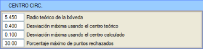
Ayrıca, her KM'de uygulanan dairesel tünel kesitinin iç ve dış yüzeyleri de oluşturulur. Bunun için KM'leri Karıştır fonksiyonunun etkinleştirilmesi tavsiye edilir. Bu seçenek, merkezi yatay planda veya düşey planda eksenle çakışmak zorunda olmayan tünellerle çalışmak için de hazırlanmıştır.
Bu seçenek etkinleştirildiğinde, aşağıdaki değerleri isteyen bir diyalog kutusu açılır:
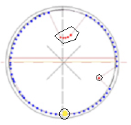Bu değerlerin kullanımının anlamı aşağıdaki şemada açıklanmaktadır:
Kabul edilen noktalar mavi renkte gösterilir ve hesaplanan son daire 169 yüzeyine yazılır. Her enkesite, teorik merkez ile uygulanan merkez arasındaki kaymaları bildiren iki sembol eklenir. Bu seçenek ayrıca, her enkesitte elde edilen tüm geometrik merkezlerin bir dizisini içeren TunCentro.top dosyasını da oluşturur.
Ayrıca, tünelin sapmasını telafi etmek için eksenin (ve kotun) konumunu içeren bir TunCentroEjeN.top dosyası da oluşturulur. Bu nokta dizisi, deverlerin neden olduğu tünelin düşey eksenindeki salınımı telafi eder. Proje tünel merkezini gerçek tünele eşitlemek için telafi eden yatay güzergah eksenlerini yeniden çizmek için çok kullanışlıdır. Ayrıca, incelenen noktaların verileri ve tünel merkezleri (gerçek hesaplanan merkez ve proje tünel merkezi) arasındaki sapmalarla ilgili bir TunCentro_N,res raporu oluşturulur. Matematiksel eksene olan mesafe de gösterilir. 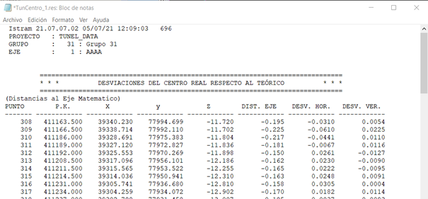
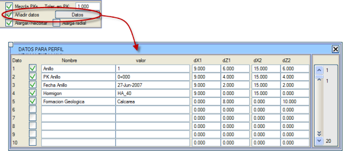
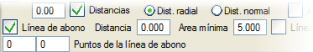
Ödeme hattının nokta sayısını (sol ve sağ) sınırlayabiliriz, örneğin radye bölgesinde bunu önlemek için. Ayrıca ödeme hattını, toplam kazı yüzeyi yerine iksa yüzeyine referans alabiliriz.
- İksa Hattı
- Birincil İksa Hattı - İkincil İksa Hattı 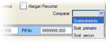
Püskürtme beton hattı ile birincil veya ikincil iksalar arasında karşılaştırma yapıldığında, geometrik analiz için tolerans hattı da bu yüzeylerden ölçülür.
İşlem gerçekleştirildiğinde oluşturulan seg_tun.dar tablosu altı yeni metraj içerecektir: Hem Üst Yarı hem de Alt Yarı Kazısı için Toplam Kazı, İçeride ve Dışarıda.
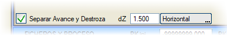
Dosyalar, Süreç ve Açısal Referans Tüm parametreler girildikten ve istenen seçenekler etkinleştirildikten sonra, analize ve sonuçların KM bazında görüntülenmesine başlamak mümkündür. 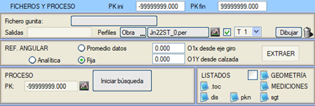
Öncelikle, saha verilerini içeren dosya (ad.pmt) yüklenmelidir. Program, çıktı dosyası olarak, girdi dosyasının adının başına # karakteri eklenmiş bir dosya yazacaktır (#ad.pmt). Ayrıca, profilometre verilerinin inceleneceği başlangıç ve bitiş KM'leri de tanımlanabilir. Analize başlamadan önce, bilgilerin yazılacağı enkesitler dosyasının adını belirtmek gerekir (varsayılan olarak program, Dosyalar bölümünde açıklandığı gibi, mevcut ay ve yıla dayalı bir ad sunar). Ayrıca, platform sayısına ve her birine uygulanan tünele bağlı olarak şunlar dikkate alınmalıdır:
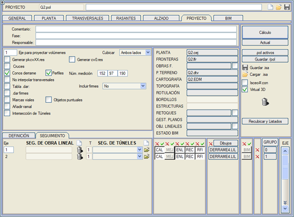 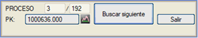[Aramayı Başlat] düğmesi [Sonrakini Bul] olarak değişir ve böylece farklı enkesitler görüntülenir. Eğer .pmt dosyasının tamamını enkesitleri görüntülemeden taramak isterseniz, KM belirtilen alana sonuncudan daha büyük bir KM girmeniz yeterlidir. Veriler işlenirken ve [Sonrakini Bul] tuşu aktifken, [Çıkış] düğmesi etkinleştirilir. Bu düğme, işlemi mevcut enkesitte kesmeye olanak tanır. Geometri ve metraj raporları, düzeltilmiş profilometre dosyası ve enkesitler dosyası mevcut enkesitin KM'sinde kapatılır. Uygulamanın gerçekleştirdiği süreç aşağıdaki gibidir:
Enkesitler dosyası, metraj verilerini içerir, böylece süreç tamamlandığında görüntülenebilir ve tam dosya ile çalışmak için ENKESİT DÜZENLEYİCİ kullanılabilir. Süreç tamamlandığında:
AÇISAL REFERANS Tanımı, noktaları sıralamaya ve daha sonra tanımladıkları yüzeyi elde etmeye olanak tanıyan bir açısal konum (saat yönünde) elde etmek için çok önemlidir. Ayrıca, mesafe ölçümü daha doğrudur; merkezden her noktaya bir bakış çizgisi atılarak kontrol yüzeyini geçene kadar uzatılır ve böylece bir noktanın tolere edilebilir veya edilemez kategorisine girip girmediği belirlenir. Eğer Veri Ortalaması seçilirse, program yukarıdaki görevleri gerçekleştirmek için her enkesitte bulunan noktaların 'ortalama' veya geometrik merkezini kullanacaktır. Sabit açısal referans seçeneğini kullanma imkanı da vardır; bu seçenekte olası bir kaydırma (O1X, O1Y) (tünel tanımlandığında merkezin konumu) bulunur ve bu veriler [ÇIKAR] düğmesine basılarak otomatik olarak elde edilebilir. Bu fonksiyon yalnızca profilometre dosyası yüklendikten, [Aramayı Başlat] düğmesine basıldıktan ve program ilk enkesitte durduktan sonra kullanılabilir. Analitik modda, program her enkesit ilerledikçe referansı otomatik olarak çıkarır ve [ÇIKAR] seçeneğinde olduğu gibi diyalog kutusunda gösterir. Eğer veri toplama, üst yarı veya alt yarı kazısını analiz etmeyi amaçlıyorsa, Veri ortalaması uygun yöntemdir, çünkü o merkezden her noktaya atılan bakış çizgileri, noktaların doğru bir şekilde sıralanması için kullanılır. Noktaların soldan sağa saat yönünde bir dizi halinde sıralandığını hatırlatırız. Bir invert kemer ölçümü durumunda, en iyi seçenek Sabit veya Analitik açısal referanstır, çünkü veri ortalaması kullanılırsa noktaların açısal referansı hatalı bir sıralamaya neden olur.
Genel olarak, noktaların ölçüldüğü istasyonun konumunu yeniden oluşturmaya çalışılmalıdır. 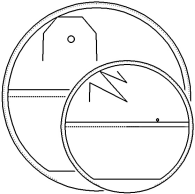Örnek olarak gösterilebilecek başka bir durum, .pmt dosyasından gelen verilerle gabari kontrolüdür; bu dosya, kritik noktaların çizim moduyla oluşturulmuştur (bu örnek Gabari Kontrolü İçin Gelişmiş Prosedürler bölümünde açıklanmaktadır). Bu durumda sabit açısal referans kullanımı, vagon çiziminde ve bu noktalardan tünelin iç kemerine olan mesafelerin ölçümünde hatalara neden olur. RAPORLAR VE METRAJLAR 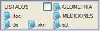 Buradan geometri ve metraj raporlarını da elde etmek mümkündür, ancak bu konu daha sonra Raporlar bölümünde açıklanmaktadır. Mesafe raporundan (dis), her enkesitin tüm noktalarını tek bir satırda içeren, tolerans yüzeyine olan mesafe değerlerini elde edeceğiz. 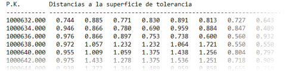
Enkesitte etiketleme seçeneği (GEOMETRİ'nin solundaki kutucuk) işaretlendiğinde, tolerans yüzeyine olan mesafeler, birbirinden minimum mesafeyle ayrılmış bazı noktalar için gösterilir; ayrıca geometri raporunun yalnızca enkesitte etiketlenmiş bu noktaları içermesini de seçebiliriz. 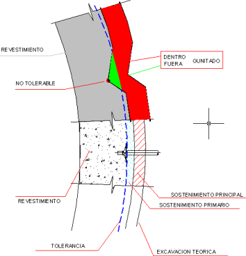Ölçülen ve Analiz Edilen Elemanların Açıklaması Ekli grafik, sonuç dosyalarında yer alan kavramları açıklamaktadır. Görüldüğü gibi, nokta tolerans çizgisinin dışında olduğu için TOLERE EDİLEMEZ kategorisine girmiştir. Yeşil alan, tünelin 'içinde' yapılan püskürtme betonu gösterir. 'Kaplama' alanı, dolayısıyla, yapılacak gerçek kaplamanın enkesit başına düşen alanını temsil edecektir. Bu ölçümlerin her zaman veri toplama kaynağına (doğal zemin kazısı veya püskürtme beton) ve uygulandıkları inşaat aşamasına (üst yarı veya alt yarı kazısı) bağlı bağlamda anlaşılması gerektiğini vurgulamak gerekir. Tüm süreç boyunca, içeriği Raporlar bölümünde açıklanan geometrik kontrol ve metraj verilerinin yazıldığı sonuç dosyalarını görüntülemek mümkündür. Analiz sırasında parametrelerin değiştirilmesi Tüm süreç boyunca, bazı parametrelerin ve değerlerin değiştirilmesi devre dışı bırakılır. Ancak açısal referans, KM toleransı, püskürtme beton kalınlığı gibi diğerleri aktif kalır. Yapılan değişiklikler, mevcut aktif enkesitten sonraki enkesiti etkileyecektir. Uygulamanın sunduğu bu olanak, kullanıcıyı bu değişikliklerin mevcut imalat takibi üzerindeki doğrudan etkisini dikkate alması konusunda uyarır. Başka bir deyişle, yapılacak hesaplamalardan emin olmak için diyalog kutusundaki mevcut verileri gözden geçirmek tavsiye edilir. 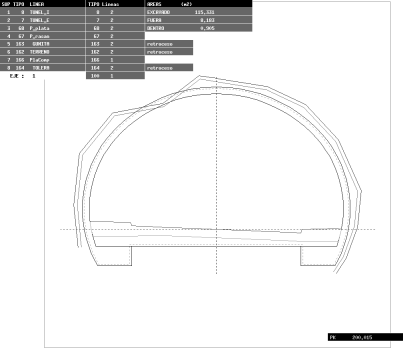
Üst Yarı ve Alt Yarı Kazısı Bu yardımcı program, üst yarı ve alt yarı kazısı verilerini içeren iki .per dosyasını (bunlar başka .pmt dosyalarından gelebilir veya gelmeyebilir) tek bir enkesit dosyasında (varsayılan olarak ST_AD.per) birleştirmeye olanak tanır. 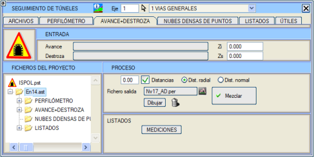
Çıktı dosyası, ALT YARI KAZISI dosyasıyla aynı sayıda KM'ye sahip olacak ve sonuç dosyasının KM'leri olarak ÜST YARI KAZISI veya ALT YARI KAZISI'nınkini seçme imkanı olacaktır. Bu nedenle, işlemi gerçekleştirmenin iki yolu vardır:
Program, öncelikle metraj düzeyinde üst yarı, alt yarı ve invert kemeri ayırma imkanı sunar ve bunun için üst yarıyı alt yarıdan ayıran kot ile alt yarıyı invert kemerden ayıran kotu temsil eden iki ufuk çizgisini talep eder. Eğer bu ayırma yapılmak istenmiyorsa, Sadece toplam seçeneği seçilmelidir.
Ardından, kullanıcının KM'leri yuvarlamak isteyip istemediğini sorar. Evet ise, program KM'yi en yakın alt veya üst birim KM'ye yuvarlar. Örneğin, KM=1023.738, KM=1024.00'e yuvarlanır. Her durumda, program tip kesit değişikliğine karşılık gelen enkesitleri de içerir. Üçüncü olarak, alt yarı kazısı enkesitlerini dışa doğru tahmin etmek (ekstrapolasyon) için maksimum mesafe sorulur. Program, sağ ve sol taraf için bağımsız olarak en yakın alt yarı kazısı enkesitini ve bu toleranstan daha küçük bir mesafede arar, böylece enkesiti tamamlar. Eğer verilen mesafe enterpolasyon yapılmasına izin vermiyorsa, o enkesit oluşturulmaz. Enterpolasyon mümkünse, enkesitler kırmızı kot eğimini takip ederek kot olarak kaydırılır, bu da yüzeylerin oluşturulmasını mümkün olan en gerçek duruma yaklaştırma çabasıdır.
Nihai kazı yüzeyi şunlardan oluşacaktır:
Alt yarı veya invert kemer enkesitleri oluşturulurken, kazı yüzeyi alttan da kapatılır. Buradan ayrıca metraj raporunu da elde etmek mümkündür, ancak bu daha sonra Raporlar bölümünde açıklanmaktadır. Aşağıda bir üst yarı ve alt yarı kazısı dosyasının metraj örneği gösterilmektedir:  Yoğun Nokta Bulutları Bu yardımcı program, lazerle elde edilen nokta bulutlarını analiz etmek için kullanılabilir. 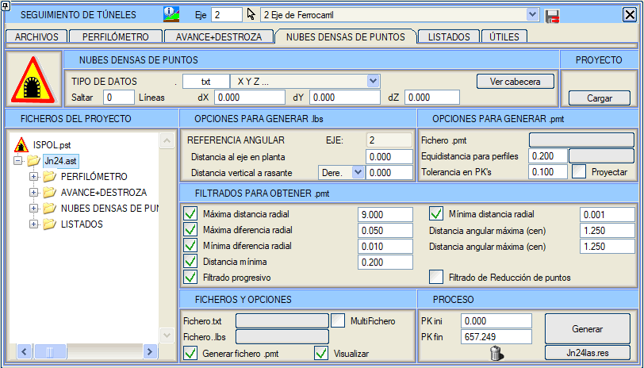
Proje Bu bölümde, ISTRAM®/ISPOL®'ün eski sürümlerinden lazer dosyaları içeren projelere karşılık gelen .dpl yapılandırma dosyalarını okumaya olanak tanıyan tek bir [Yükle] düğmesi bulunur. Lazerden Gelen Veriler VERİ TİPLERİ'nde, seçilecek ASCII dosyasının türünü, dosya uzantısını belirterek önceden seçmek mümkündür. Giriş dosyasının formatı (varsayılan olarak, .txt uzantılı) çok basittir: mutlak (X,Y,Z) koordinatlarını içeren üç sütun ve önünde beş sütuna kadar (a, b, c, d, e) içerebilir. Bu şekilde, bir .toc dosyası a X Y Z formatına ve bir .top dosyası a b c X Y Z formatına karşılık gelir. .las ve .laz tipi dosyalar girdi olarak kabul edilir. Çoklu dosya ile çalışıldığında, önceden kesilmiş dosyalar (lt1) bu durumlarda ascii formatında ve .xyz uzantısıyla oluşturulur. 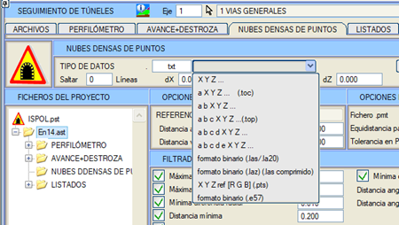
[Başlığı Görüntüle] seçeneği, önceden belirlenen uzantıya göre seçilen dosyanın ilk 100 satırını bir tabloda düzenler. Bu, dosyanın iç formatını görmeye ve dosyanın başında bir başlık satırı olup olmadığını kontrol etmeye olanak tanır. Ayrıca, programın yükleme işlemi sırasında dosyanın başındaki belirli sayıda satırı atlaması da belirtilebilir; bu, başlık satırlarına karşılık gelecektir. dX, dY ve dZ alanlarında, okunan koordinatlara eklenecek değerler de belirtilebilir. .lbs Oluşturma Seçenekleri Bu bölümden, açısal referansa ilişkin parametreler kontrol edilir: hem metre cinsinden yatay eksene olan mesafe, hem de sol, sağ kırmızı kota veya yardımcı bir boykesite göre metre cinsinden düşey mesafe. Bu son durum, kemeri söz konusu yardımcı boykesite göre tanımlanmış tüneller için kullanışlıdır. .pmt Oluşturma Seçenekleri 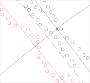Aşağıdaki gibidir:
Çıktı .pmt dosyasının oluşturulması için, km'ler bir aralığa ek olarak bir .pk* dosyası (.pkd, .pkz, vb.) veya bir .per enkesit dosyası aracılığıyla da verilebilir.
Yansıt kutusunu işaretlersek, tolerans dahilinde alınan noktaların orijinal x, y, z koordinatları merkez km'ye yansıtılabilir.
 .pmt Elde Etmek İçin Filtreleme Bu bölümde, çıktı .pmt dosyasına yazılan enkesitleri oluştururken uygulanacak filtreleme parametreleri belirlenir. Filtreleme parametreleri her enkesite sırayla uygulanır ve gereğinden fazla veya hatalı olabilecek bilgileri içeren noktaları eler. Bu parametreler şunlardır (radyal ve noktalar arası mesafeler metre, açısal mesafeler ise grad cinsinden belirtilir):
Bu filtreleme, herhangi bir nedenle (kablolar, havalandırma kanalı vb.) tünel kesitine ait olmayan noktaları tespit eder.
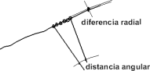Bu durumda ara noktalar iptal edilir, bu da aslında tünel kemerinin önemli olmayan, yani tekrarlanan veya birbirine çok yakın olan noktalarının elenmesi anlamına gelir.
Ve filtrelemeler, enkesit başına düşen nokta sayısı izin verilen maksimumun altına düşene kadar tekrarlanır.
Dosyalar ve Süreç Giriş dosyasının formatı, çıktı .pmt dosyasının adı ve nokta filtreleme parametreleri yapılandırıldıktan sonra, bu .pmt dosyası (filtrelenmiş verilerle) oluşturulur ve daha önce bahsedilen olağan imalat takip görevlerinde kullanılabilir. 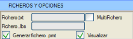Bunun için programa, lazerden gelen verileri içeren .txt dosyası (veya kullanıcı tarafından girilen uzantıya sahip dosya) verilir. Program, orijinaline benzer ancak KM'lere göre sıralanmış ve üç ek hesaplanmış veri sütunu eklenmiş, işlenmiş bir ara dosya oluşturur:
Bu dosya varsayılan olarak ikili formatta (okunması çok daha hızlıdır) ve orijinal dosyayla aynı adla, ancak .lbs uzantısıyla kaydedilir. Not: Lazer veri dosyaları olan .las dosyalarıyla karıştırılmaması için ara .las dosyası silinir ve yalnızca ikili formatlı ara .lbs dosyası korunur. Daha önce oluşturulmuş bir .lbs dosyanız varsa, orijinal dosya yerine bunu sağlamanız tavsiye edilir; böylece üç ek sütunu hesaplamak için harcanan zamandan tasarruf edersiniz. Eğer hem Fichero.txt hem de Fichero alanlarına bir dosya atanmışsa, program ikinci .lbs dosyasını alır). Program, noktaları (her KM'ye atandıktan sonra) açısal referanslarına göre (-π ile +π arasında) sıralar ve Görüntüle seçeneği etkinleştirilmişse, filtrelenmiş çıktıyı (aynısı .pmt'de de bulunacaktır) temsil eden veri çoklu çizgileri oluşturur. Bu, üç boyutlu uzayda görüntülenmesini, sonuçların önceki bir analizle karşılaştırılmasını vb. mümkün kılar. 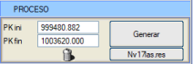[Oluştur] seçeneği, belirtilen KM'ler arasında SÜRECİ başlatır ve Görüntüle seçeneğinin etkin olup olmamasına bağlı olarak, [Sil] düğmesine basılması oluşturulan çoklu çizgileri siler. Eğer .pmt dosyası da elde edilmek isteniyorsa, .pmt dosyası oluştur seçeneğinin etkinleştirilmiş olması gerekir. İşlem, <Esc> tuşuna basılarak herhangi bir zamanda durdurulabilir. 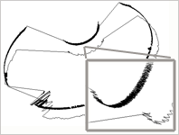Ekli resim, elde edilen sonuç hakkında bir fikir vermektedir (filtrelenmiş ve orijinal olmak üzere iki çizgi görülmektedir). Böylece, oluşturulan .pmt imalat takip dosyası, kabul edilebilir hesaplama süreleri elde etmek için uygun sayıda noktaya sahip olacaktır; aksi takdirde bu süreler çok yüksek olurdu. [Oluştur]'un altındaki düğmeye basıldığında, kaynak dosyanın işlenmesi ve filtrelenmesi sürecinin bir raporu elde edilir; bu rapor ayrıca RAPORLAR sekmesinden de erişilebilir. Oluşturulan .pmt dosyası, mevcut imalat takip işlemlerinden herhangi birini gerçekleştirmeye olanak tanıyacaktır.
BÜYÜK MİKTARDAKİ VERİLERİN OKUNMASI VE İŞLENMESİ Lazerden gelen ham veri sayısı çok fazla olduğunda, bunlar genellikle bir dizi ASCII dosyası şeklinde veya büyük boyutlu tek bir dosya (birkaç GB) olarak gelir. Bu durumda, ÇokluDosya seçeneği tarafından sağlanan seçenekler kullanılmalıdır. 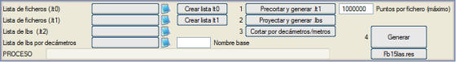
Etkinleştirildiğinde, menünün başka bir bölümü açılır. Bu bölümün görevi, girdi dosyaları setinden, .pmt dosyalarının veya verilerin 3D temsilinin oluşturulmasını kolaylaştıran başka bir sıralı dosya seti oluşturmaktır. İzlenecek adımlar şunlardır:
.lt0 listesi oluşturulduktan sonra Ön kes ve .lt1 oluştur kutusunu işaretliyoruz. Program bir .lt1 listesi oluşturacak ve bir sonraki adıma geçeceğiz.
Bir .lt1 dosya listesinin oluşturulması, yüklenecek çoklu dosyaların bir milyondan az noktaya sahip olması ve analiz edilecek farklı ASCII dosyaları arasında çakışan noktaların olmaması durumunda yapılır.
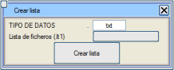Elinizde bir dosya seti olduğunda bunu yapmanın basit bir yolu, [Liste Oluştur] düğmesine tıklamak ve dosyaların uzantısını seçtikten sonra (varsayılan olarak, .txt), .lt1 dosyasına bir ad belirtmek, tekrar [Liste Oluştur] düğmesine tıklamak ve dosya seçici ile sıraya bakılmaksızın tüm veri dosyalarını seçmektir.
2. adım, [Yansıt ve .lbs oluştur] kutucuğuna tıklamaktan oluşacaktır. Bu kutucuk, önceki adımda elde edilen dosya listesini okuyacaktır. Verilerini mevcut eksene yansıtır ve her bir girdi dosyası için, yansıtılmış, sıralanmış ve .lbs OLUŞTURMA SEÇENEKLERİ bölümünde girilen parametreleri dikkate alan noktaları içeren bir .lbs çıktı dosyası oluşturur. Bu seçenek ayrıca, oluşturulan .lbs dosyalarının adlarını, KM aralıklarını, nokta sayılarını ve eksen numarasını içeren, öncekiyle aynı ada sahip ikinci bir .lt2 dosya listesi de oluşturur.
Algoritma,
nokta yoğunluğunu analiz eder ve her 10 m'de bir kesim yapar. Eğer 10 m'lik bir blok çok büyükse, o zaman her metrede bir kesim yapar. Eğer bu dosyalar hala çok büyükse (lazerin durduğu alanlar), bir metrelik dosya da kendi içinde birkaç dosyaya bölünür. Sonuç olarak, elde edilen her dosya, yüksek nokta yoğunluğu nedeniyle bu kesitlerin daha küçük kesitlere 'bölündüğü' durumlar hariç, 10 metrelik bir kesitteki tüm veri noktalarını içerecektir.
Bu noktalar bir veya daha fazla girdi dosyasından gelebilir. Bu şekilde elde edilen her dosyanın adı, Temel Ad'da belirtilen ortak bir bölümü ve dosyanın başlangıç KM'sinin tam KM'sini içerir. Temel ad belirtilmezse, program her .lbs dosyasının adı olarak KM'leri kullanır. Ayrıca, bu dosyaların adlarını, sıralanmış KM'lerini, nokta sayılarını ve eksen numarasını içeren bir .lt3 listesi de oluşturulur.
Raporlar Uygulamanın oluşturduğu raporların analizi, aşırı kazı veya aşırı püskürtme beton yapılması gereken ve gabari kaybına veya bazı inşaat süreçlerinin gerçekleştirilememesine neden olabilecek yerleri tespit etmeye olanak tanır, ayrıca bir lazerden gelen verilere uygulanan filtrelemenin güvenilirliğini tahmin etmeyi sağlar. 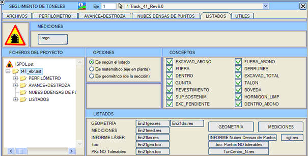
Aşağıda, oluşturulan farklı rapor türleri açıklanmaktadır:
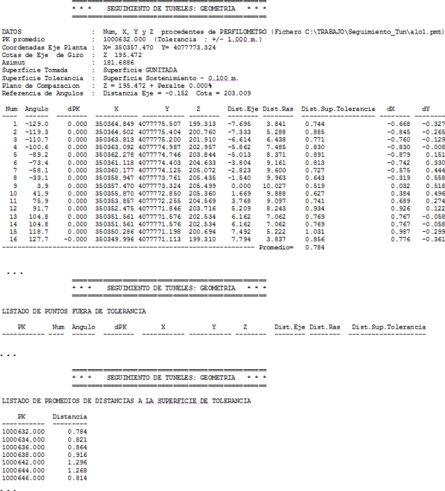
Geometri raporuyla birlikte, TOLERANS DIŞI NOKTALAR içeren bir .toc dosyası oluşturulur. Formatı şöyledir:
NOKTA_NO
X Y
Z KOD
KOD bölümünde, tolerans yüzeyine olan mesafe ve KM bilgisi yer alır: D:0.000/KM:0.000. 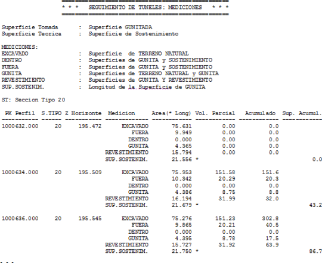
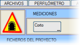Bu rapor için [Kısa] seçeneği seçilebilir; bu durumda DIŞARIDA ve İÇERİDE metrajları gösterilmez.
Metraj raporunun sonunda, tip kesitlere göre iki bölüme ayrılmış bir özet gösterilir: kesitlere göre birikimli ve tip kesitlere göre birikimli. Aynı anda, sgtN.res raporu da, cv.res tarzında sütunlu olarak oluşturulur ve bu nedenle hesap tablolarında kullanıma uygundur. [KAVRAMLAR] bölümü, raporlarda ve enkesitlerde hangi metrajların yazdırılacağını etkinleştirmeye/devre dışı bırakmaya olanak tanır. Bu işlem, imalat takibine başlamadan önce yapılmalıdır. Varsayılan olarak tüm kavramlar etkindir. Bu metraj raporunun her zaman, her bir kavramın hesaplanmasına katılan yüzeyleri bildiren bir başlık taşıdığını hatırlatmak önemlidir. Sürece katılan yüzeyler, tanımladığımız karşılaştırma düzlemine göre kesilir ve bu yüzeyler o kota ulaşmazsa, düşey olarak uzatılmaz, kendi üzerlerine kapatılırlar. Her bir kavram için alınan yüzeylerin açıklaması aşağıda tanımlanmıştır:
Metraj raporu, mühendise, tünelin farklı aşamalarının normal inşaat sürecini bazen engelleyebilecek hataları tespit etmede çok yararlı bir araç sunar. Doğru yorumlanması, dolaylı olarak alınması gereken düzeltici eylemler hakkında bilgi verir.
Raporlar anlaşıldıktan sonra, tamamen farklı bilgi raporları üretecek olan farklı analiz türlerini belirlemek mümkündür:
Araçlar Burada, dosya dönüştürme, diğer metrajlar ve bazı yardımcı araçlara yönelik bir dizi yardımcı program gruplandırılmıştır. Dönüştürme
Metrajlar BACALI TEORİK METRAJ Bu seçenekle, teorik metrajların bir raporu elde edilir ve ayrıca özel aşırı kazı bölgelerinin veya bacaların yerelleştirilmesine ve ölçülmesine olanak tanınır. Bu seçenek, tek platformlu veya çift platformlu ancak tek kemerli projeler için geçerlidir. Ufuk çizgisi olarak PROFİLOMETRE sekmesinde tanımlanan karşılaştırma düzleminin yüksekliği kullanılır. Bu raporu elde etmek için şunlar istenir:
Bir teorico.per dosyası ve başlığında tip kesit adını ve projeye dayalı aşağıdaki metrajları içeren bir <Temel_Ad>teo.res raporu (örneğin, Ks11teo.res) oluşturulur:
Bu rapor ayrıca, hesaplama kesitlerine ve tip kesitlere göre bir hacim sınıflandırması da içerir, böylece mühendise, açıklanan hacimlerle ilişkili diğer tür hesaplamaları yaparken gerekli tüm bilgileri kolaylaştırır. Baca metraj raporunun sonunda, tip kesitlere göre iki bölüme ayrılmış bir özet gösterilir: kesitlere göre birikimli ve tip kesitlere göre birikimli. sgtN.res raporu da, cv.res tarzında sütunlu olarak oluşturulur ve bu nedenle hesap tablolarında kullanıma uygundur. NİHAİ METRAJ Bu seçenek, tünelin toplam kazısını içeren bir dosyadan metraj raporu oluşturmaya ve isteğe bağlı olarak bunu üst yarı, alt yarı ve invert kemer olarak ayırmaya olanak tanır. Bu durumda ve ÜST YARI+ALT YARI KAZISI birleştirme seçeneğine benzer şekilde, program her bir kavrama ait bölgeleri belirlemek için dönme eksenine göre iki seviye ister. Buradan İÇERİDE, DIŞARIDA ve PÜSKÜRTME BETON kavramları ölçülmez (bunlar ÜST YARI+ALT YARI KAZISI sekmesinden analiz edilir), çünkü veri olarak doğal zemin kazısı alınır. Rapor, <Temel_Ad>med.res dosyasında oluşturulur ve her sayfada listelenen enkesitlerin tip kesit adı başlıkta görünecektir. Eğer bir sayfanın ortasında tip kesit değişirse, yeni bir sayfa başlar. Nihai metraj raporunun sonunda, tip kesitlere göre iki bölüme ayrılmış bir özet gösterilir: kesitlere göre birikimli ve tip kesitlere göre birikimli. Nihai metraj yapılırken, sgtN.res raporu da, cv.res tarzında sütunlu olarak oluşturulur ve bu nedenle hesap tablolarında kullanıma uygundur. Metrajlı enkesit dosyaları oluşturan işlemler, metrajlarını kontrol etmeye olanak tanıyan bir seg_tun.dar tablosu oluşturur. Yardımcı Programlar
Gabari Kontrolü İçin Gelişmiş Prosedürler Bir aracın (ister karayolunda ister demiryolunda) tam gabarilerini kontrol etmek için, ISTRAM®/ISPOL®, kesin bir kontrol raporunun nihai olarak hazırlanmasına olanak tanıyan bir dizi araç sunar. En hassas durum bir demiryolu veya metro tünelinde ortaya çıkabileceğinden, bu özel durum için izlenecek prosedürler burada açıklanmaktadır. Teorik Gabariler Aşağıda, demiryolu veya metro projelerinde teorik gabarilerin kontrolü için geliştirilmiş prosedürde izlenecek adımlar detaylandırılmıştır:
Resimdeki diyalog kutusuna göre, program 1000 yarıçapına kadar S852 sembolünü ve 1000 yarıçapından itibaren S853 sembolünü kullanacaktır.
Bu alanlar doğru bir şekilde tamamlandıktan sonra, eksen hesaplaması yapılacak ve böylece ISPOL#.per dosyası (burada # eksen numarasıdır) elde edilecektir.
Mesafeler seçeneğini etkinleştirmek, her bir verinin yanında tolerans yüzeyine olan mesafeleri enkesitte etiketlemek için yararlı olabilir.
Gerçek Gabariler Program ayrıca, profilometre ile alınan gerçek kaplama yüzeyi ile gerçek gabarileri analiz etme imkanı da sunar.
Mesafeler seçeneğini etkinleştirmek, her bir verinin yanında tolerans yüzeyine olan mesafeleri enkesitte etiketlemek için yararlı olabilir.
Bu durumda, gabari yüzeyi ile kaplama yüzeyi arasındaki mesafeler, varsayılan mod olan kaplama yüzeyi yerine, gabari hattını tanımlayan noktalarda etiketlenir. |
||||||||||||||||||||||||||||||||||||||||||||||